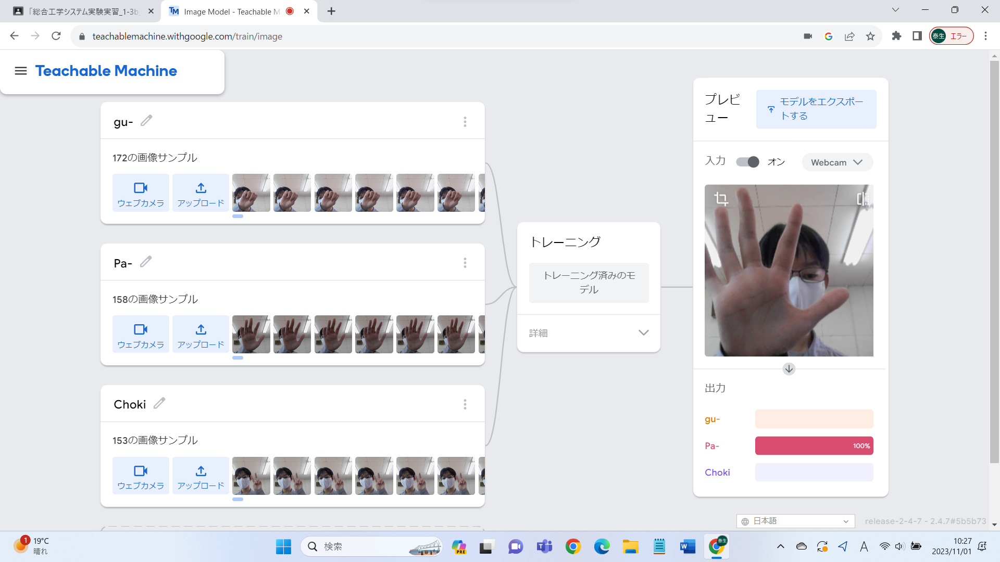
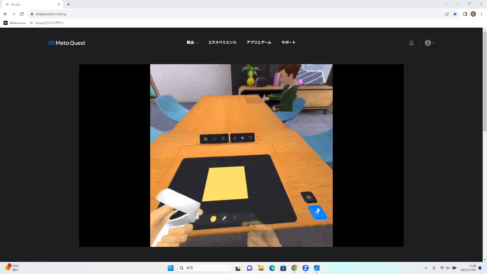

第2週目
2-1 １週目のレポートをHTMLで作る
１週目のレポート
1.内容
HTML言語を用いて1週目のレポートを作成した．基本的に土井先生が用意してくださったテンプレートを編集することで作成した．またAdd filesを用いて作業中のキャプチャーを添付した．レポートには前回実施した内容のまとめと感想を載せている．また実験で使用したホームページのURLも添付している．
2.感想
はじめてHTML言語でホームページ作成し，図も挿入した．そのため苦労するだろうと勝手に思っていたが以外にも円滑に取り組みを進められた．一方で，分量についてはどのくらい書くのが適切か分からなかったためなるべく多めに書いた．
2-2 機械学習体験

1.内容
AIについて触れあうための実習として機械学習に取り組んだ．今回はカメラで撮影した画像を認識させ，グー・チョキ・パーの３種を区別させるように学習させた．この様子は画像で添付している．この区別には色が関係しており色の関係を数値化して判断している．私の中での知能とは知識をもとに判断できる能力だと考えている．
2.感想
人工知能という言葉は日常でよく聞くが説明してくださいと言われると言葉が詰まる．だけど今回の実習を通して，自分なりの人工知能・知能の両方について説明できるようになった．しかしメカニズムについては知識が足りず説明できないため自主的に調べ，ふに落としたい．
2-3 VR（バーチャルリアリティー：Virtual Reality）会議室の体験

1.内容
VRゴーグルを用いてバーチャル空間で活動した．ペアで利用し，１人はゴーグルを着用・１人はミラーリングで行動した．ゴーグル内ではホワイトボードで絵をかいたり座席移動したりとバーチャル空間で活動した．ミラーリング側はキャプチャを撮影しレポートに用いるためにダウンロードした．
2.感想
体験入学で一度だけVRゴーグルを使用したのであらかたは知っていたが会議室に入ることはしていなかったので心が躍った．特に座席移動や落書き等は自分の好きにできた．またペアとのコンビネーションでよいキャプチャを作成できた．この活動を通してバーチャル空間での活動が身近に感じた．また実用的なツールとしてVRが役立つことも知った．